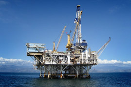

MEXICAN OIL RESERVES
Mexico recently completed a new assessment of its oil reserves and estimated proven and probable oil reserves at approximately 18.7 billion barrels. Mexico’s earlier assessment in 2007 estimated reserves at approximately 12.4 billion barrels in all country resources, but in 2011, the estimate was revised to 15.7 billion barrels to reflect additional exploration findings. Discoveries in the Sigsbee Field increase this figure by an additional 3 billion barrels.
SIGSBEE FIELD
The Sigsbee Field is one of the largest gas and crude oil fields in the Gulf of Mexico, with new advances in seismic imaging and drilling leading to the discovery of this new field. This offshore oil field is located approximately 150 km southeast from the city of Matamoros on the east coast of Mexico in what is often referred to as the “Grand Canyon under the sea.” Covering an area 30 by 15 square kilometers (12 by 5.8 sq. mi), the Sigsbee discovery is estimated to contain 1.2 trillion cubic meters (42 trillion cubic feet) of gas and up to 3 billion barrels of liquid crude oil. At its largest point, the field contains a gas column that is being drilled in water that is more than 2,000 meters deep. To date, the field has been drilled to a depth of 5,861 meters. Mexico and the United States are involved negotiations to secure access to this source of oil and gas.

FOUR INTEGRAL COMPONENTS
The Sigsbee Field is comprised of the following four integral components: Ojeda, Arana, Quiroga, and Orizba. These components are responsible for the production, processing and transportation of oil and gas from the field.
OJEDA OIL AND GAS PROCESSING PLANT

Ojeda is an oil and gas processing plant located 32km (20 mi) northeast of San Fernando, Mexico. The facility is 19 km (12 mi) wide and 21 km (13 mi) long. Constructed in 1989, Ojeda is one of the largest crude oil and gas processing plant facilities in Mexico. The city of San Fernando is the main transport hub of Ojeda oil from the Gulf of Mexico Sigsbee field to inner-lying cities within the country.
Go backARANA SPAR

Arana spar is located on the maritime border between Mexico and the United States, approximately 120 kilometers (75 mi) west of Matamoros. Arana is the second highest producing in the field, behind Quiroga, and is the primary tie-in point connecting the field to Ojeda processing plant. Arana produced 4.6 tons of crude oil in 2010.
Go back
QUIROGA RIG

The Quiroga is the highest producing component of the Sigsbee Field, with more than a third of the discovered natural resources being drilled and produced from four wells. The offshore oil rig – a semi-submersible – is located south of the Arana spar and southwest of the Orizba, tying into the Arana to transport crude oil production back to the Ojeda plant, The Quiroga produced over 5.4 tons of crude oil in 2010, with production continuing to increase at a steady rate as additional wells are added and new techniques such as water injections, are used to stimulate production.
Go back
ORIZBA RIG
The Orizba is an ultra deepwater drillship equipped to drill in 3,048 m (10,000 ft) of water, situated directly over the deepest part of the valley along which Sigsbee field is located. At its largest point, the reservoir contains a gas column 1,450 meters (4,760 ft.) deep with a 200 meters (660 ft.) deep oil rim below it. The Orizba is located directly over this gas column. It is estimated the gas column contains approximately 1.2 trillion cubic meters (42 trillion cubic feet) of gas, and the Orizba is set to produce this gas as well as more than 4.2 tons of crude oil per year.
Go back
"We believe that: while we can't create perfection : we can streve for it "